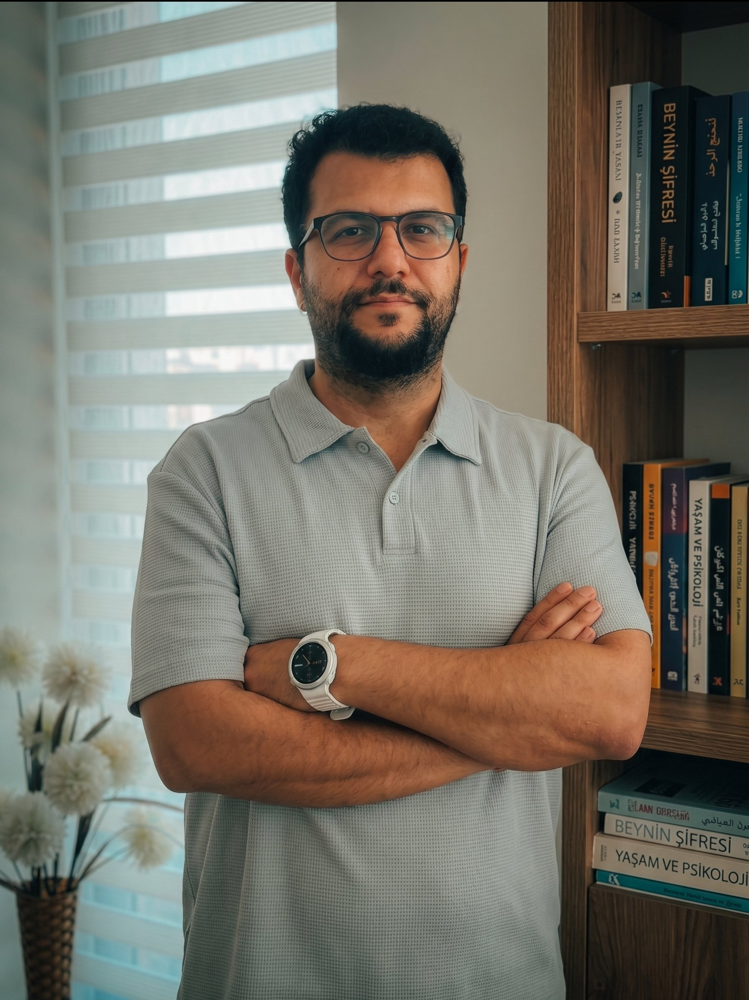

Uzman Klinik Psikolog olarak WISC-4, AGTE ve MOXO değerlendirmeleri yapıyor; çocuk-ergen ve bireysel danışmanlarıma ACT ve bilişsel davranışçı terapi (BDT) teknikleriyle eşlik ediyorum. Özellikle disleksi, otizm spektrumu ve özel gereksinimli çocuklar ve aileleriyle çalışmaktan güç alıyorum.

Okuma-yazma güçlüğü yaşayan çocuklarda değerlendirme, aileyi ve okulu sürece dahil eden bir destek planı.
Erken tanılama sonrası aileye rehberlik, sosyal-iletişim becerilerini destekleyen bireysel çalışma planı.
Çocuğun güçlü yönlerine odaklanan, gelişim düzeyine uygun, aile ile birlikte yürütülen bir yaklaşım.
Zihinsel gelişim, dikkat ve genel gelişim düzeyini ölçen, sonuçları ayrıntılı bir raporla paylaştığım standardize testler.
Yaşına ve gelişim düzeyine uygun yöntemlerle, çocuğun kendini güvende hissettiği bir ortamda yürütülen görüşmeler.
Kabul ve Kararlılık Terapisi (ACT) ile Bilişsel Davranışçı Terapi (BDT) tekniklerini danışanın ihtiyacına göre birlikte kullanıyorum.
Kaygı, tükenmişlik, ilişki güçlükleri ve yaşam geçişleri üzerine yetişkin danışanlarla yürüttüğüm bireysel görüşmeler.
Aileler ve meslektaşlar için düzenli olarak paylaştığım kısa yazılar.
İlk görüşmede sizi ve çocuğunuzu dinliyor, en uygun değerlendirme veya terapi planını birlikte belirliyoruz.
Randevu Al